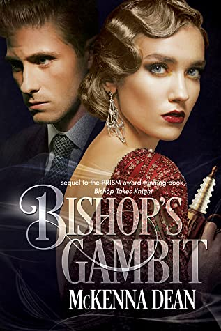

|
 |
 |
| Paulo Coelho's enchanting novel has inspired a devoted following around the world. This story, dazzling in its powerful simplicity and soul-stirring wisdom, is about an Andalusian shepherd boy named Santiago who travels from his homeland in Spain to the Egyptian desert in search of a treasure buried near the Pyramids. Along the way he meets a Gypsy woman, a man who calls himself king, and an alchemist, all of whom point Santiago in the direction of his quest. No one knows what the treasure is, or if Santiago will be able to surmount the obstacles in his path. | The Great Gatsby, F. Scott Fitzgerald's third book, stands as the supreme achievement of his career. This exemplary novel of the Jazz Age has been acclaimed by generations of readers. The story is of the fabulously wealthy Jay Gatsby and his new love for the beautiful Daisy Buchanan, of lavish parties on Long Island at a time when The New York Times noted "gin was the national drink and sex the national obsession," it is an exquisitely crafted tale of America in the 1920s. | The unforgettable novel of a childhood in a sleepy Southern town and the crisis of conscience that rocked it. "To Kill A Mockingbird" became both an instant bestseller and a critical success when it was first published in 1960. It went on to win the Pulitzer Prize in 1961 and was later made into an Academy Award-winning film, also a classic. |
 |
 |
|
| First, there were ten—a curious assortment of strangers summoned as weekend guests to a little private island off the coast of Devon. Their host, an eccentric millionaire unknown to all of them, is nowhere to be found. All that the guests have in common is a wicked past they're unwilling to reveal—and a secret that will seal their fate. For each has been marked for murder. | Life of Pi is a fantasy adventure novel by Yann Martel published in 2001. The protagonist, Piscine Molitor "Pi" Patel, a Tamil boy from Pondicherry, explores issues of spirituality and practicality from an early age. He survives 227 days after a shipwreck while stranded on a boat in the Pacific Ocean with a Bengal tiger named Richard Parker. | The unforgettable, heartbreaking story of the unlikely friendship between a wealthy boy and the son of his father’s servant, The Kite Runner is a beautifully crafted novel set in a country that is in the process of being destroyed. It is about the power of reading, the price of betrayal, and the possibility of redemption; and an exploration of the power of fathers over sons—their love, their sacrifices, their lies. |
|  | ||
| The sun sets. The moon takes its place, illuminating the most evil corners of the planet. What twisted fear dwells in that blackness? What legends attach to those of sound mind and make them go crazy in the bright light of day? Only Suspense Magazine knows…Teaming up with New York Times bestselling author Jeffery Deaver, Suspense Magazine offers up a nail-biting anthology titled: “Nothing Good Happens After Midnight.” This thrilling collection consists of thirteen original short stories representing the genres of suspense/thriller, mystery, sci-fi/fantasy, and more. | You're cordially invited to dinner. Penthouse access is available via the broken freight elevator. Black tie optional. A dinner party is held in the penthouse of a multimillion-pound development. All the guests are strangers - even to their host, the billionaire owner of the building. None of them know why they were selected to receive his invitation. Whether privileged or deprived, besides a postcode, they share only one thing in common - they've all experienced a shocking disturbance within the building's walls.By the end of the night, their host is dead, and none of the guests ever said what happened. His death remains one of the biggest unsolved mysteries - until now. | Newly-minted secret agent Rhett Bishop would rather face down a horde of angry wolf shifters or her fathers former mob contacts than accept her current assignment: pose undercover as a suburban housewife, complete with a husband, slippers, and pipe. But after the debacle of her previous mission, Rhett has a lot to prove. |
| Emily and Jake are the perfect couple. Or so everyone says. But Emily just read a letter that has shattered her perfect world. Now she only has one thing on her mind… which one of her friends is sleeping with her husband?Emily watches Jake as he makes small talk with their children, still the perfect man she married years ago. But when the phone rings and he answers before quickly putting it down again, she sees the look on her husband’s face – guilt. She knows the signs – after all, she’s been lying to him for years. | That summer, there were four of them, all on the cusp of adulthood: Andy, her boyfriend Marcus, her best friend Peter, and Em, whiling away the hours in a deserted manor house with a rich, sordid history. Sorely without the ambition and opportunities that her friends have always counted on, Andy finds herself terrified of a future that will take them all down very different paths. Her newfound fears make her reckless, resulting in increasingly destructive behavior. Then David shows up. Magnetic, worldly, and on the run from the police, David presents an irresistible lure for both Andy and Peter, pitting the two lifelong friends against each other for the first time. | I cant sleep.Not since June 16th, 2018.Not since what happened. Traumatised by the events of her past, exhausted by insomnia, Becky Braithwaite believes that a new start will help her to recover.She leaves home to fulfil her brothers dreams, and honour the life he never had but she soon finds that escaping from the past is not as easy as she imagined. |
| On her favorite day of the year, Elizabeth Davenport awakens in her cottage on the wild and windy Cornish coast, opens her front door, and discovers a precious gift: the small blue crocus and a note that begins I Wish . . . The notes are never signed, but she knows they’ve been left by her first and truest love, Tom Hale. Each of these precious missives convey a simple wish for something they had missed, and the life they might have shared, if circumstances hadn't forced them apart all those years ago. She has kept them all. | A woman ready to give up on love discovers that age is truly just a number in this heartwarming and steamy new romantic comedy by USA Today bestselling author Nicola Marsh. For almost a decade, successful 37-year-old Samira Broderick has used her bustling LA practice as an excuse to avoid a trip home to Australia. She still resents her meddling Indian mother for arranging her marriage to a man who didn't stick around when the going got tough, but now with a new job Down Under, she's finally ready to reconnect with her. And while she's there, a hot international fling might be just what she needs to get out of her recent funk. | You are invited to set sail on the maiden voyage of the SS Princess of the Pacific in this indulgent historical romance from Anna Godbersen, the New York Times bestselling author of the Luxe series.Vida Hazzard can see her future: aboard the heralded Millionaires Ship of the West, shell charm the young scion Fitzhugh Farrar, resulting in a proposal of marriage. |
| I’m good at hiding my feelings. Having to pretend I’m not in love with my best friend? Pfft. That’s child’s play.Here’s how I do it: I avert my eyes when he walks out of his room, shirtless in all his toned glory. I squash the butterflies that fill my stomach every time he slowly unfurls a dimpled smile. And, most importantly, I keep an arsenal of “personal massagers” in my bedside drawer. Wink. | OLIVIA THOMPSON needs a change. After losing her parents and discovering that her husband has been cheating on her, Olivia and her siblings buy a lighthouse in the small town of Hope Harbor, Maine. There they hope to create a new life and move on from tragedy in a place where the past can no longer touch them. What Olivia discovers is a lighthouse with more secrets than she has and a man willing to risk it all for her. However, she’s not ready to give up her newfound freedom for anyone. | In this finger-licking good rom-com, two is the perfect number of cooks in the kitchen.Nikki DiMarco knew life wouldnt be all sunshine and coconuts when she quit her dream job to help her mom serve up mouthwatering Filipino dishes to hungry beach goers, but she didnt expect the Maui food truck scene to be eat-or-be-eatenor the competition to be so smoking hot. |